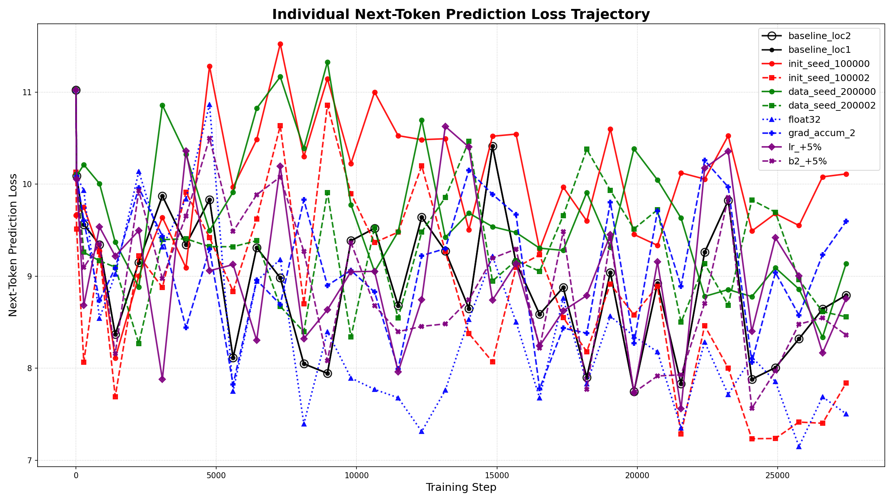
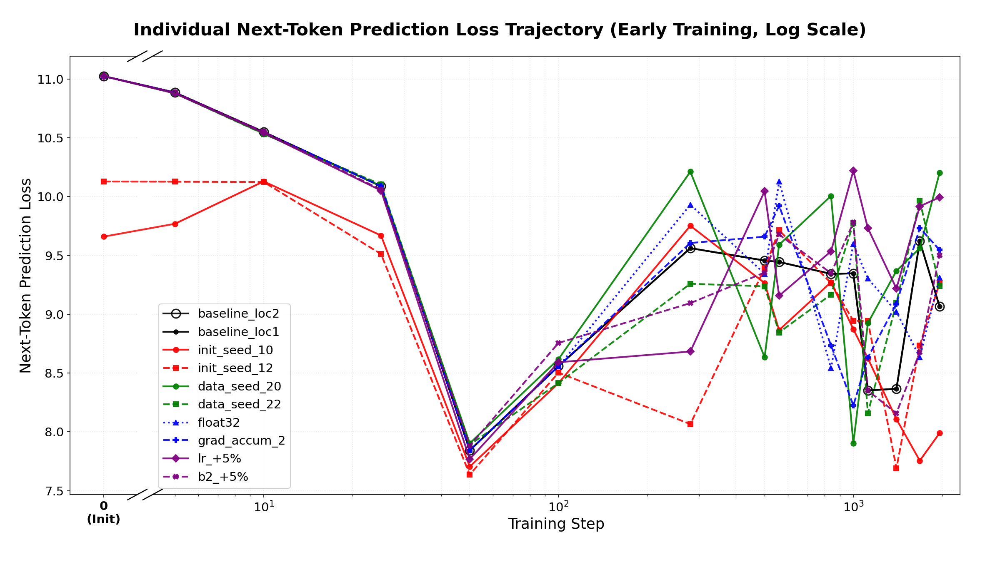
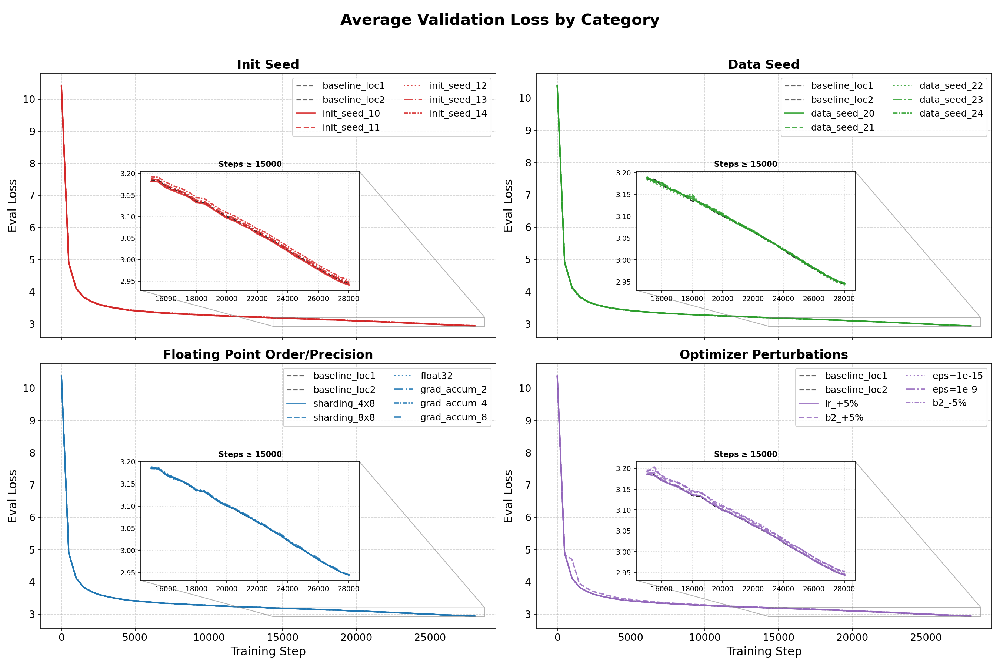
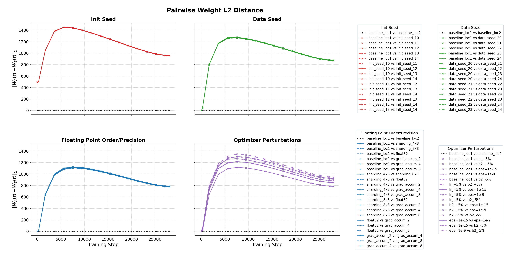
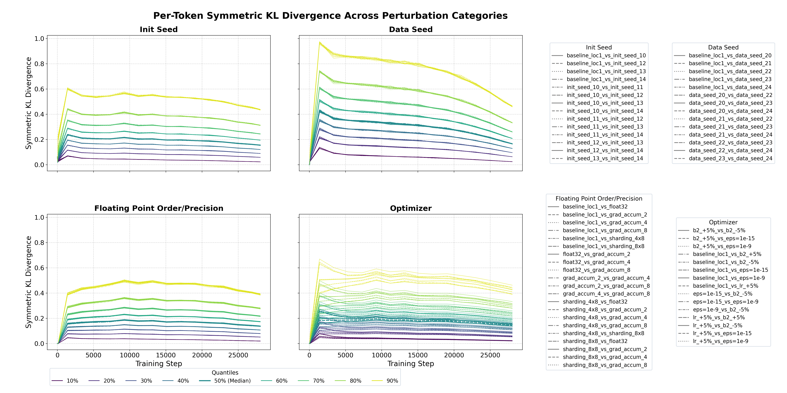
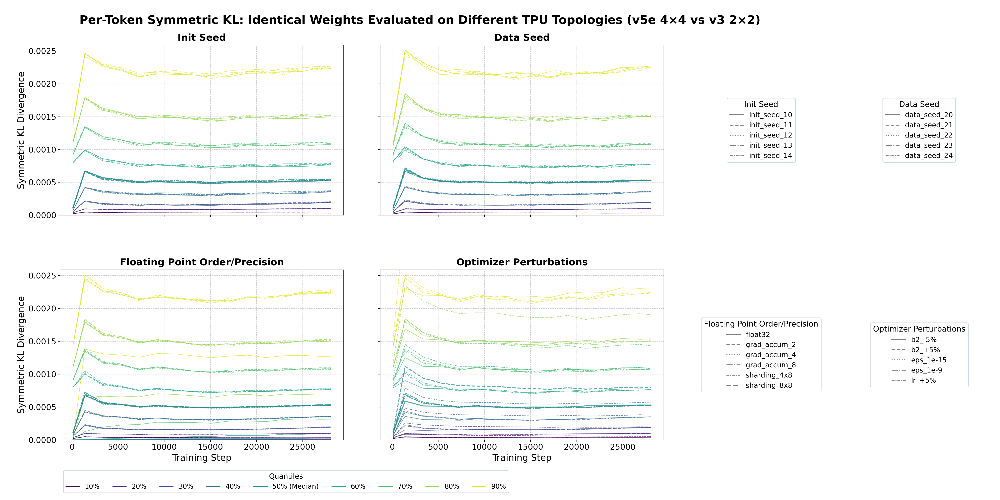
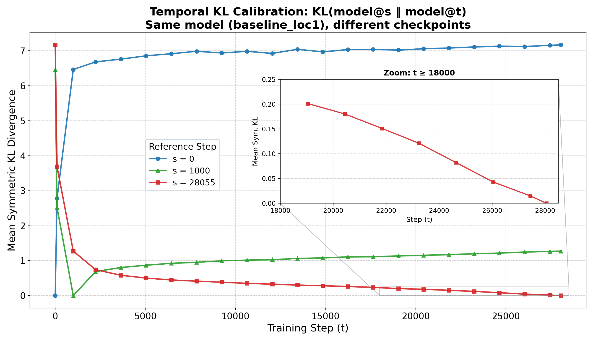

Quantifying Pretraining Variance: Data, Initialization, and Floating Point Arithmetic
To understand how different sources of variance contribute to run-to-run differences in language model pretraining, we train paired 184M-parameter language models, varying one factor at a time—initialization seed, data seed, floating point arithmetic order, and optimizer hyperparameters—while holding all else fixed. The variance induced by the ordering of floating point operations is within 20% of the variance from changing the data or initialization seed, viewed from both parameter space and function space. Final validation loss across all 23 runs falls within 0.4% of each other.
Introduction
There are a variety of sources of variation in the training of LLMs. Some are obvious: the random initialization of the weights, the data seed which determines the sampling of the data, small changes to hyperparameters of the optimizer. Some are less obvious and arise from the use of finite-precision arithmetic: the precision of the computation (bfloat16 vs float32) and, more subtly, the order in which floating point operations are performed. Because floating point addition is non-associative—in bfloat16, $(128 + 0.5) + 0.5 = 128$ while $128 + (0.5 + 0.5) = 129$—the sharding and parallelism configuration, which determines the order of arithmetic operations in matrix multiplications and gradient reductions, affects the outcome of the computation, even though the computation in (associative) real numbers is identical.
How large are these effects, and how do they compare to one another?
We train 23 runs of a 184M-parameter decoder-only transformer (based on the nanodo architecture) on C4, where each run differs from a baseline in exactly one factor. Some factors represent stochastic draws from natural probability distributions (initialization and data seeds), while others are controlled, deterministic perturbations to optimizer hyperparameters or hardware sharding configurations:
| Category | Runs | What Changes |
|---|---|---|
| Baseline | 2 | Identical seeds, hardware, and sharding, but run in different data centers |
| Init Seed | 5 | Random initialization seed |
| Data Seed | 5 | Data sampling seed (different permutation of the dataset) |
| Floating Point (FP) Arithmetic | 6 | FSDP sharding topology (4×8, 8×8 vs baseline 4×4), precision (float32 vs baseline bfloat16), or gradient accumulation (2, 4, 8 microbatches vs baseline 1) |
| Optimizer | 5 | Learning rate (+5%), AdamW $\beta_2$ (±5%), or AdamW $\varepsilon$ ($10^{-15}$, $10^{-9}$ vs baseline $10^{-20}$) |
Note on data seed variants: Because our training budget (~3.7B tokens) is a small fraction of the total C4 corpus (~156B tokens), different dataloader seeds sample approximately independent subsets of the data. (Testing the effect of the same token subset presented in a different random order remains an interesting avenue for future work.)
We compute all $\binom{n}{2}$ pairwise comparisons within each category, where each non-baseline category also includes the baseline model ($\binom{2}{2} + \binom{6}{2} + \binom{6}{2} + \binom{7}{2} + \binom{6}{2} = 67$ pairs), measuring divergence in both parameter space ($\ell_2$ norm of weight differences) and function space (symmetric KL divergence of next-token prediction distributions).
Our experimental design relies on bitwise determinism on TPUs: given the same training configuration (including hardware and software versions), JAX programs compiled by XLA produce identical results across runs. This does not hold by default on GPUs (see the OpenXLA documentation on GPU determinism). We verified this empirically—two training runs with identical configurations but run in different data centers produce bit-for-bit identical weights at every checkpoint—and use this zero-variance baseline to attribute observed differences to a single perturbation. As illustrated in Figure 1, this zero-variance baseline contrasts sharply with all other perturbation categories, which exhibit substantial divergence at the individual token level after about 100 steps, despite producing nearly indistinguishable aggregate loss curves.



Experimental Setup
Model and training. We use a 12-layer decoder-only transformer based on the nanodo architecture, with $d_{\text{model}} = 1024$, 16 attention heads, feedforward dimension 4096, GELU activations, rotary positional embeddings, QK layernorm, no biases, and untied embedding and unembedding weights (~184M non-embedding parameters: 151M in the transformer body and 33M in the unembedding head). Training on C4 for 28,055 steps (~3.7B tokens, Chinchilla-optimal at 20 tokens per parameter) in bfloat16. Optimizer: AdamW with peak learning rate $2.0 \times 10^{-3}$, $\beta_1 = 0.9$, $\beta_2 = 0.95$, $\varepsilon = 10^{-20}$, decoupled weight decay $2.9 \times 10^{-4}$, gradient clipping (global norm 1.0), linear warmup for 1,000 steps followed by linear decay to zero. Batch size: 128 sequences of 1024 tokens (131,072 tokens per step).
Hardware. Baseline: 16-chip TPU v5e pod slice in a 4×4 topology. We use Fully Sharded Data Parallelism (FSDP): model parameters and optimizer state are sharded across all devices along a single FSDP axis. Sharding variants use 32-chip (4×8) and 64-chip (8×8) slices, which change both the number of shards and the reduction order in collective operations. Cross-topology evaluation compares outputs from a 16-chip TPU v5e (4×4) against a 4-chip TPU v3 (2×2).
Floating point (FP) arithmetic variants. Each run differs from the baseline in exactly one factor. The FP arithmetic category includes three types of perturbation:
- Sharding topology: changing the FSDP configuration alters both the reduction order in AllReduce/ReduceScatter collectives and the partitioning of matrix multiplications across devices.
- Precision: float32 vs bfloat16.
- Gradient accumulation: accumulating gradients over 2, 4, or 8 microbatches (vs 1) changes the order and grouping of the gradient summation.
Metrics.
- Parameter space: $|W_A(t) - W_B(t)|_2$, the $\ell_2$ norm of the difference in the (vectorized) weights at training step $t$.
- Function space: per-token symmetric KL divergence over the full 32K vocabulary on a held-out evaluation set of 10K sequences:
$$D_{\text{sym-KL}}(P_A, P_B) = \frac{1}{2}\left[D_{\text{KL}}(P_A | P_B) + D_{\text{KL}}(P_B | P_A)\right]$$
We report quantiles (10th through 90th percentile) of this quantity across the evaluation set. We report the mean KL (averaged over tokens) unless otherwise noted.
Results
Parameter space
Initialization seed produces the largest $\ell_2$ distances between models (~1400 at peak), followed by data seed (~1250), optimizer perturbations (~1200), and FP arithmetic variants (~1100). The baseline pair remains at exactly zero throughout training. All categories show a characteristic pattern: rapid initial divergence, a peak around steps 5,000–10,000, and then a gradual decline, suggesting that the models may eventually settle into a shared region of the loss landscape despite substantial early divergence.

At the final training step, the mean pairwise L2 distances are: init seed 958, data seed 875, optimizer 874, and FP arithmetic 783. FP arithmetic produces weight distances ~10% smaller than data seed and ~18% smaller than init seed—the reverse of the ordering we observe in function space (below).
Within each non-optimizer category, the pairwise distances are tightly concentrated: any two init-seed pairs produce nearly indistinguishable trajectories, as do any two data-seed pairs or FP arithmetic pairs. The optimizer category shows more spread, which is unsurprising—a 5% change to the learning rate is a qualitatively different perturbation than a 5% change to $\beta_2$ or a change to $\varepsilon$, so there is no reason to expect these pairs to cluster.
Function space
When we turn from parameter distance to function space—measuring the per-token symmetric KL divergence between output prediction distributions—the relative ranking of the categories shifts. While initialization seed produced the largest parameter distance, data seed produces the highest sustained functional divergence (final mean KL ~0.23), followed by initialization seed (~0.21), optimizer perturbations (~0.20), and floating-point arithmetic (~0.19). Floating-point arithmetic is within ~17% of data seed and ~10% of initialization seed. (The same ratios computed from the medians are similar.)

The within-category consistency seen in parameter space persists here. The between-category variance in final KL is ~280× larger than the within-category variance.
Average metrics
Despite the per-token divergence, average validation loss is nearly indistinguishable across all 23 runs throughout training. At the final step, the 23 runs span the range [2.941, 2.953]—a maximum deviation of 0.4% from the overall mean of 2.946. Within-group standard deviations are $\leq 0.004$ for every category; FP arithmetic is even tighter at 0.001.
As a practical takeaway: given a pair of trained models, standard evaluation metrics like validation loss cannot distinguish whether the runs differed by data seed, initialization seed, or floating point arithmetic. By contrast, inspectable differences in weight distance ($\ell_2$) or prediction KL divergence reveal clear, category-specific signatures.
The Eval Topology Noise Floor
Floating point non-associativity affects not only training but also evaluation. The same model weights evaluated on different hardware topologies—where the parallelism and sharding induce different reduction orders in the forward pass—produce different outputs from the same inputs. This creates a noise floor: the minimum divergence one will observe from changing the evaluation hardware, even with identical weights.
We evaluate each of our 23 models on two TPU topologies—a 16-chip TPU v5e (4×4) and a 4-chip TPU v3 (2×2)—and compute the symmetric KL between the resulting output distributions.

Three findings emerge.
The noise floor is small, nonzero, and nearly category-independent. For each of the 23 models, we compute the per-token symmetric KL between the same model's outputs on the two topologies, and then report the median (q50) and 90th percentile (q90) across all tokens in the evaluation set. The table below shows the average of these quantities across models within each category:
| Category | N models | Mean of median KL (q50) | Mean of q90 |
|---|---|---|---|
| Baseline | 2 | 1.92 × 10⁻⁴ | 5.30 × 10⁻⁴ |
| Init Seed | 5 | 1.95 × 10⁻⁴ (range: 1.90–1.99) | 5.34 × 10⁻⁴ |
| Data Seed | 5 | 1.93 × 10⁻⁴ (range: 1.92–1.94) | 5.35 × 10⁻⁴ |
| FP Arithmetic (bf16 only) | 5 | 1.93 × 10⁻⁴ | 5.33 × 10⁻⁴ |
| Optimizer (excl. $\beta_2$+5%) | 4 | 1.93 × 10⁻⁴ | 5.30 × 10⁻⁴ |
Excluding two outliers (float32 and $\beta_2$+5%), all 21 bfloat16-trained models cluster at q50 ≈ $1.93 \times 10^{-4}$ nats with less than 5% spread.
float32 reduces the noise floor by $\sim 4\times$. The float32-trained model has a median cross-topology KL of $4.6 \times 10^{-5}$ nats (q90 = $9.6 \times 10^{-5}$), compared to $\sim 1.9 \times 10^{-4}$ for bfloat16-trained models.
The $\beta_2$+5% model is mildly elevated. The model trained with AdamW $\beta_2 = 0.9975$ (vs baseline $0.95$) shows a cross-topology q50 of $3.2 \times 10^{-4}$—roughly $1.6\times$ the modal value. One potential explanation is that the higher $\beta_2$ produces sharper output distributions that amplify topology-induced perturbations through the softmax, but we have not investigated this.
Temporal calibration
To calibrate the magnitude of the training-time floating point (FP) arithmetic effect, we compare it to the function-space drift of the baseline model over the course of training. Figure 6 shows $D_{\text{sym-KL}}(\text{model}@s, \text{model}@t)$ for various reference steps $s$.

Discussion
Implications for reproducibility. Two groups training "the same model" on "the same data" with different floating point arithmetic orders—which can be induced by using different hardware, sharding, gradient accumulation, or compilers—will produce models whose predictive distributions differ by an amount comparable to using different data seeds. This is a consequence of finite-precision arithmetic and distributing computation across multiple accelerators. Reproducing a training run requires matching not just the model, data, and hyperparameters, but the hardware topology, sharding configuration, and compiler version.
The FP arithmetic concentration. Within each perturbation category, pairwise distances are tightly concentrated: the magnitude of divergence is determined by the type of perturbation, not the specific realization. For initialization and data seed, one might appeal to concentration of measure—each seed is an independent draw, and in high-dimensional spaces, pairwise distances between i.i.d. random vectors concentrate—though whether this concentration survives the nonlinear map from initialization to trained weights is nontrivial. What is more surprising is that the FP arithmetic variants exhibit the same tight concentration despite having no clear probabilistic basis: the sharding topology, gradient accumulation depth, and precision are all deterministic choices, yet the fifteen pairwise comparisons within this category are as tightly concentrated as the ten pairwise comparisons among five random data seeds. Equally surprising is that moving from bfloat16 to float32 (which changes the representable set of numbers, not just the reduction order) produces divergence of a similar magnitude to changing the sharding topology (which changes only the reduction order). We do not have an explanation for why these mechanistically distinct perturbations produce such similar-magnitude effects, or why their magnitude is comparable to that of genuinely random perturbations like data or initialization seed.
Implications for RL fine-tuning. Modern RL pipelines for LLMs use disaggregated serving: one server for prefill, where a forward pass over a long prompt generates the KV cache in parallel across the sequence, and another server for decode, which uses the KV cache and prior logits to sample the next token. The optimal sharding configurations for prefill and decode stages differ (see the JAX scaling book), leading to the exact type of floating point arithmetic differences we have investigated here. Yao et al. (2025) show that this creates a training-inference mismatch that renders nominally on-policy algorithms effectively off-policy, and Qi et al. (2025) trace the root cause to bfloat16 rounding errors that accumulate across tokens. Our results quantify how large such distributional shifts can be in the pretraining setting, and compare them to more familiar sources of variance like data and initialization seeds.
Open questions. Do the relative magnitudes of these effects change at larger model scales, where more devices participate in collective reductions? Additionally, our models are trained at Chinchilla-optimal compute; models are often overtrained beyond compute-optimality to reduce inference costs (Gadre et al., 2024). Does the divergence continue to grow with additional training, or does it saturate?
Related Work
Run-to-run nondeterminism in neural network optimization. The sensitivity of neural network optimization to numerical noise and initialization has been documented in smaller and synthetic settings. Snapp and Shamir (2021) showed that initialization randomness and data shuffling compound through nonlinear activations to produce divergent predictions in synthetic networks, while Summers and Dinneen (2021) isolated individual sources of nondeterminism (such as GPU non-deterministic operations and single-bit initial parameter perturbations) in image classification benchmarks, finding that optimization trajectory instability makes models equally sensitive to all perturbation types. Our work extends these observations to full-scale autoregressive language model pretraining, tracking both weight-space and token-level functional divergence over full training trajectories. Crucially, we find that rather than devolving into unconstrained chaotic divergence, the variance within each perturbation class is tightly concentrated and exhibits a clear ordering across categories.
Numerical discrepancies and distribution shift in LLMs. In post-training and reinforcement learning for LLMs, recent work has highlighted how floating-point discrepancies introduce subtle but damaging distribution shifts. Yao et al. (2025) demonstrated that decoupled RL pipelines—where the rollout inference engine (e.g., vLLM) and the training backend employ different kernels and parallelization schemes—create a numerical mismatch that renders nominally on-policy RL algorithms off-policy. Qi et al. (2025) showed that bfloat16's limited mantissa precision causes rounding errors to accumulate across sequential token generation, and that simply switching to float16 largely eliminates this mismatch. Our results show that these floating-point arithmetic effects are not unique to serving architectures or post-training RL; they are an active source of variance during pretraining itself, inducing functional shifts on par with changing the data or initialization seeds.
Acknowledgements
Thanks to Peter Bartlett, Andras Gyorgy, Alan Malek, Hossein Mobahi, Vaishnavh Nagarajan, Clayton Sanford, and Gil Shamir for helpful discussions throughout this work.